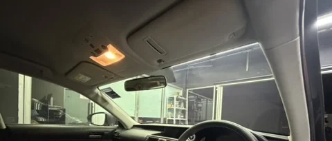
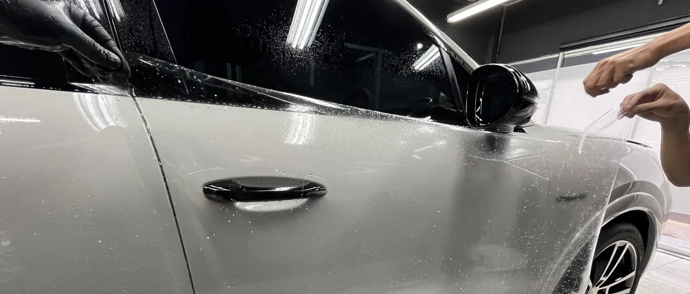
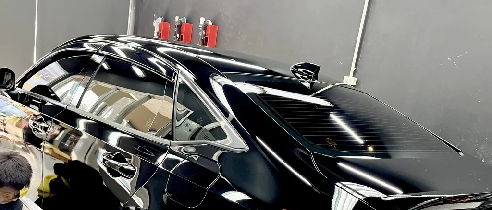
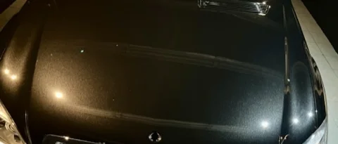
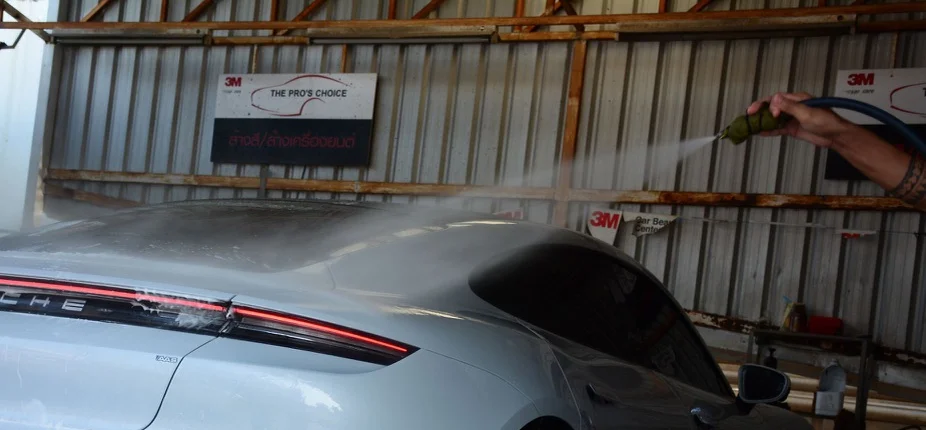
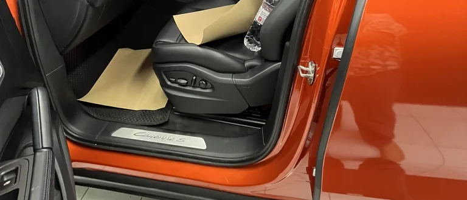

Window Film
ฟิล์มกรองแสง
ลดความร้อน แสงสะท้อน และปรับสมดุลความสบายภายในห้องโดยสารตามลักษณะการใช้งานจริง
ดูรายละเอียดเลือกจากปัญหา ไม่ใช่แค่เลือกจากชื่อบริการ
บางคันเริ่มจากลดความร้อนภายในห้องโดยสาร บางคันต้องการปกป้องผิวสีตั้งแต่วันแรก และบางคันจำเป็นต้องแก้ปัญหาผิวเดิมก่อน จึงจะได้ผลลัพธ์ที่ดีในระยะยาว
Heat & Comfort
เลือกฟิล์มกรองแสงตามระดับความเข้ม การมองเห็น และการลดความร้อนที่เหมาะสม
ดูบริการฟิล์มกรองแสงImpact Protection
ฟิล์มใสกันรอยช่วยลดความเสียหายที่ผิวสี ในจุดที่เสี่ยงต่อการกระแทกจากการใช้งานจริง
ดูบริการฟิล์มใสกันรอยLong-Term Surface Care
เคลือบเซรามิกช่วยให้การดูแลง่ายขึ้น ลดการเกาะของคราบ และรักษาสภาพผิวให้สม่ำเสมอขึ้น
ดูบริการเคลือบเซรามิกSurface Refinement
การขัดปรับสภาพผิวคือขั้นตอนสำคัญก่อนการเคลือบหรือการปกป้องที่ต้องการผลลัพธ์ชัดเจน
ดูบริการขัดลบรอยMaintenance
การล้างรถที่ถูกขั้นตอนช่วยลดการสะสมของคราบและลดความเสี่ยงต่อการเกิดรอยจากการใช้งานประจำวัน
ดูบริการ Car WashStyle & Surface Change
Wrap Film เหมาะสำหรับการปรับภาพลักษณ์ เพิ่มคาแรกเตอร์ และเปลี่ยนโทนของรถโดยไม่ทำสีใหม่
ดูบริการ Wrap FilmALL SERVICES

Window Film
ลดความร้อน แสงสะท้อน และปรับสมดุลความสบายภายในห้องโดยสารตามลักษณะการใช้งานจริง
ดูรายละเอียด
Paint Protection Film
ปกป้องจุดเสี่ยงจากหินดีด รอยขีดข่วน และแรงกระแทกที่เกิดขึ้นจากการใช้งานบนถนนจริง
ดูรายละเอียด
Ceramic Coating
เหมาะสำหรับผู้ที่ต้องการดูแลง่ายขึ้น รักษาความเงา และมีแผนดูแลผิวสีต่อเนื่องในระยะยาว
ดูรายละเอียด
Paint Correction
คืนความเรียบและความใสของผิวสี ก่อนเข้าสู่ขั้นตอนการปกป้องหรือการดูแลในระดับที่สูงขึ้น
ดูรายละเอียด
Car Wash
การดูแลประจำที่วางอยู่บนขั้นตอนที่ถูกต้อง ช่วยรักษาสภาพรถและลดการสะสมของปัญหาเล็ก ๆ ในระยะยาว
ดูรายละเอียด
Wrap Film
เปลี่ยนภาพลักษณ์ของรถให้ชัดขึ้นด้วยวัสดุสำหรับงานตกแต่งพื้นผิว โดยยังคงความยืดหยุ่นในการเปลี่ยนสไตล์
ดูรายละเอียดOUR SYSTEM
ดูสภาพรถจริง จุดเสี่ยง และความคาดหวังของเจ้าของรถก่อนเลือกบริการ
เตรียมพื้นผิวและสภาพแวดล้อมให้เหมาะกับงานแต่ละประเภท
ดำเนินงานตามมาตรฐานของบริการนั้น ๆ เพื่อให้ผลลัพธ์สม่ำเสมอ
ส่งมอบพร้อมคำแนะนำการดูแล เพื่อรักษาผลลัพธ์ให้เหมาะกับการใช้งานจริง
CONSULTATION
แจ้งรุ่นรถ ลักษณะการใช้งาน และสิ่งที่กังวลกับเราได้ เราจะช่วยจัดลำดับความสำคัญให้เหมาะกับรถของคุณก่อนตัดสินใจ
ปรึกษาการดูแลรถ